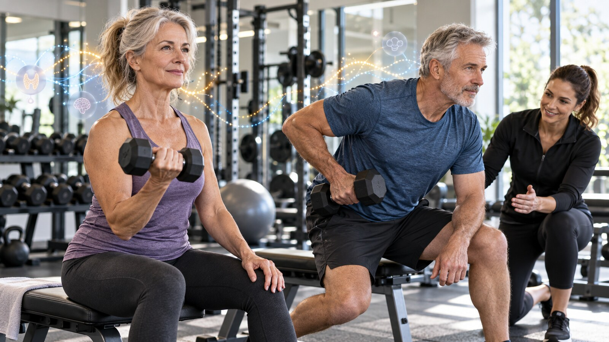
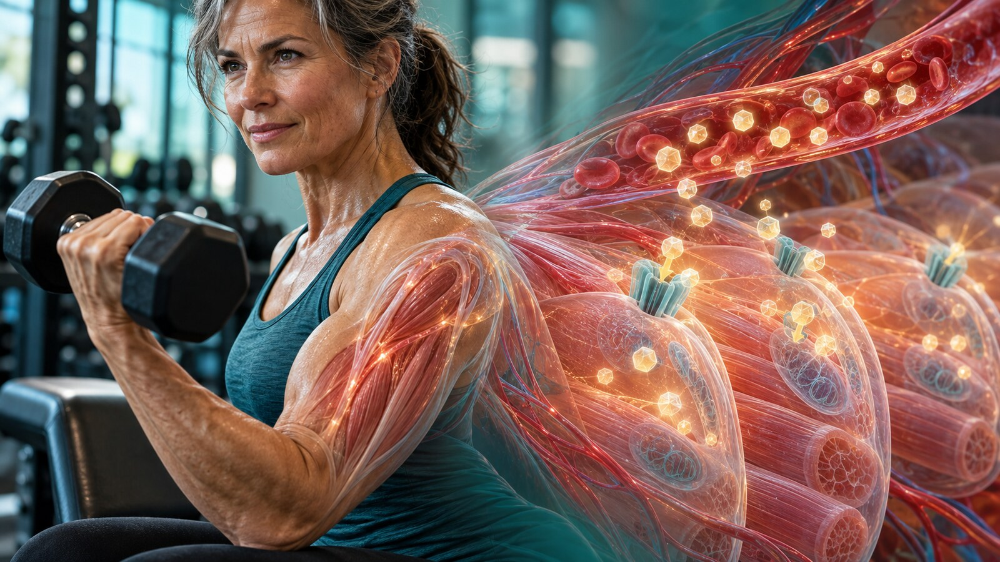
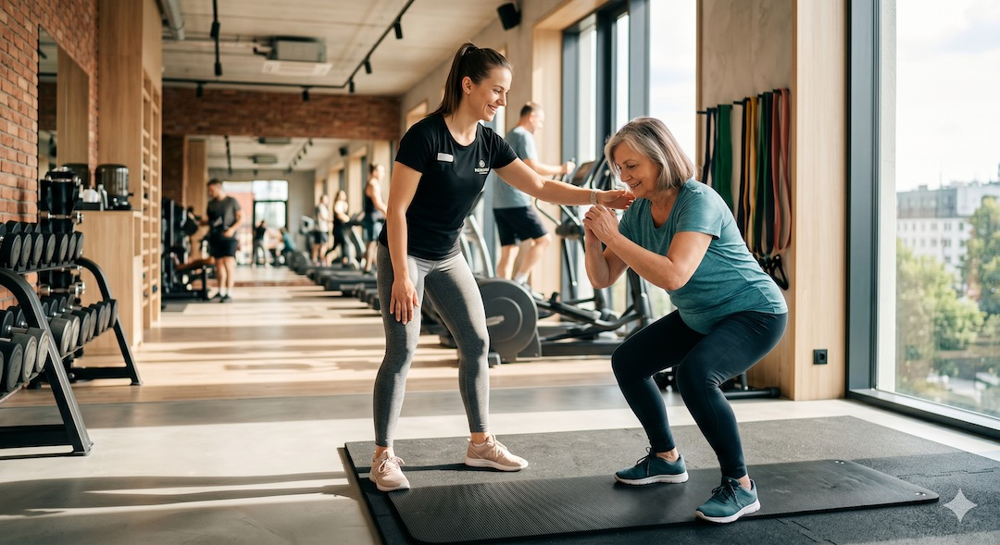

Trening siłowy nie cofa metryki i nie „ustawia hormonów” jak terapia. Może jednak poprawić siłę, sprawność, tolerancję wysiłku i zdolność wykonywania codziennych zadań. Po 50-tce właśnie te efekty są ważniejsze niż krótkotrwały skok hormonu wzrostu, testosteronu, kortyzolu lub BDNF po pojedynczej sesji.
Szybka odpowiedź
Trening oporowy jest jednym z najlepiej udokumentowanych sposobów poprawy siły i sprawności w późniejszym wieku. Nie jest hormonalnym odmładzaniem. Dla początkującej osoby praktycznym startem są 2 sesje całego ciała tygodniowo, spokojna progresja i kilka powtórzeń pozostawionych w zapasie. Choroby oraz objawy wysiłkowe wymagają dopasowania planu.
Kluczowe wnioski
- Postęp wynika z regularnego bodźca i regeneracji, a nie z maksymalizacji krótkiego „piku” hormonów.
- Najpewniejsze korzyści obejmują siłę, funkcję mięśni i sprawność codzienną.
- Związki treningu siłowego z niższą umieralnością pochodzą głównie z badań obserwacyjnych i nie dowodzą gwarantowanej ochrony.
- Obciążenie zwiększaj dopiero wtedy, gdy technika, objawy i regeneracja są stabilne.
Czy trening siłowy naprawdę „odmładza hormony”?
Wysiłek może przejściowo zmieniać stężenia hormonu wzrostu, testosteronu, IGF-1 i kortyzolu. Wielkość odpowiedzi zależy od rodzaju ćwiczeń, objętości, przerw, pory dnia i wytrenowania. Krótki wzrost po sesji nie oznacza trwałego podniesienia poziomu hormonu ani nie wyjaśnia całej adaptacji mięśni.

Przegląd badań hormonalnych u starszych osób wykazał zróżnicowane odpowiedzi zależne od programu i populacji. W praktyce nie dobieraj ciężaru po wielkości odpowiedzi hormonalnej. Postęp oceniaj przez technikę, siłę, liczbę powtórzeń, codzienną sprawność i tolerancję planu.
Jeśli podejrzewasz niedobór testosteronu lub inną chorobę hormonalną, potrzebna jest ocena objawów i prawidłowo wykonane badania. Trening nie zastępuje diagnostyki opisanej w poradniku testosteron po 50-tce.
Co trening oporowy daje mięśniom i codziennej sprawności?
Najbardziej wiarygodny efekt to poprawa siły i funkcji: łatwiejsze wstawanie, noszenie zakupów, chodzenie po schodach oraz odzyskiwanie równowagi. W metaanalizie prób u starszych osób z sarkopenią poprawiały się między innymi siła chwytu, siła prostowników kolana, prędkość chodu i test wstań–idź.
W tym samym przeglądzie wyniki dotyczące masy mięśniowej były mniej jednoznaczne niż wyniki siły i sprawności. To ważna korekta marketingowego hasła „odbudujesz mięśnie w kilka miesięcy”. Efekt zależy od programu, wyjściowego stanu, podaży energii i białka oraz regularności.
Jeżeli problemem jest jednocześnie mała siła i nadmiar tkanki tłuszczowej, zobacz wyjaśnienie otyłości sarkopenicznej.
Jak trening siłowy wspiera metabolizm?
Pracujące mięśnie zwiększają zapotrzebowanie na energię i wychwyt glukozy. Regularny trening może poprawiać kontrolę glikemii i skład ciała, lecz skala efektu zależy od zdrowia, objętości ruchu, diety i leczenia. Nie należy obiecywać konkretnego spadku HOMA-IR każdej osobie.

HOMA-IR jest wskaźnikiem obliczanym z glukozy i insuliny na czczo. Nie jest domowym miernikiem „wieku metabolicznego” i nie powinien być interpretowany bez kontekstu. Przy lekach mogących wywołać hipoglikemię zasady pomiaru glukozy i ruchu ustal z lekarzem.
Szerszy kontekst podaje Centrum Metabolizmu i Brzucha po 50-tce.
Czy trening siłowy wydłuża życie?
Metaanaliza badań obserwacyjnych wykazała związek wykonywania treningu oporowego z niższą umieralnością. Taki wynik nie dowodzi, że określona liczba minut bezpośrednio zapobiega zgonowi. Osoby ćwiczące mogą różnić się dietą, sprawnością, chorobami, statusem społecznym i innymi zachowaniami zdrowotnymi.
Analiza sugerowała nieliniową zależność i największe względne obniżenie ryzyka w okolicy 60 minut tygodniowo, ale autorzy podkreślili potrzebę dalszych badań. Nie wolno zamieniać tej obserwacji w limit, po którym trening staje się szkodliwy. Program dobiera się do celu, doświadczenia i regeneracji.
O różnicy między długością życia i sprawnością przez lata przeczytasz w artykule healthspan po 50-tce.
Jak bezpiecznie zacząć trening po 50-tce?
Na początek wybierz dwa treningi całego ciała tygodniowo. Naucz się kilku ruchów: siadania lub wypychania nogami, przyciągania, pchania, zawiasu biodrowego i noszenia. W serii zostaw 2–3 poprawne powtórzenia w zapasie, a ciężar zwiększaj dopiero po opanowaniu techniki.

| Element | Pierwsze 4 tygodnie | Kiedy progresować |
|---|---|---|
| Częstotliwość | 2 sesje całego ciała | Trzecia sesja dopiero przy dobrej regeneracji |
| Serie | 1–2 serie na ruch | Dodaj serię, gdy technika pozostaje stabilna |
| Wysiłek | Zapas 2–3 powtórzeń | Dodaj powtórzenie lub najmniejszy ciężar |
| Kontrola | Zapisuj obciążenie i objawy | Cofnij ruch przy nasilaniu bólu lub utracie techniki |
Ból w klatce piersiowej, omdlenie, nagła nietypowa duszność lub objawy neurologiczne wymagają przerwania wysiłku i oceny. Przy niestabilnej chorobie serca, niekontrolowanym ciśnieniu albo poważnych ograniczeniach ruchu plan powinien zostać dopasowany klinicznie.
Gotową ścieżkę pierwszej wizyty znajdziesz w poradniku jak zacząć na siłowni po 50-tce.
Najczęściej zadawane pytania
Czy trening siłowy po 50-tce jest bezpieczny?
Zwykle tak, gdy obciążenie rośnie stopniowo, technika jest kontrolowana, a choroby i objawy uwzględniono w planie.
Czy trzeba trenować do upadku mięśniowego?
Nie. Początkująca osoba może skutecznie ćwiczyć, zostawiając 2–3 poprawne powtórzenia w zapasie.
Ile razy w tygodniu trenować po 50-tce?
Dwie sesje całego ciała są praktycznym początkiem. Częstotliwość zależy od objętości, zdrowia i regeneracji.
Czy trening siłowy podnosi testosteron na stałe?
Może wywołać przejściową odpowiedź hormonalną, ale nie gwarantuje trwałego wzrostu ani nie zastępuje diagnostyki niedoboru.
Czy godzina treningu siłowego tygodniowo jest optymalna?
Nie ustalono jednej dawki optymalnej dla wszystkich. Wynik około 60 minut pochodzi z analizy obserwacyjnej i nie jest limitem bezpieczeństwa.
Plany startowe, ćwiczenia, progresję i bezpieczeństwo zebraliśmy w Centrum Treningu Siłowego po 50-tce.
Źródła
- Fragala i wsp. — stanowisko NSCA o treningu oporowym starszych osób, 2019
- Chen i wsp. — metaanaliza prób treningu oporowego u starszych osób z sarkopenią, 2021
- Shailendra i wsp. — metaanaliza treningu oporowego i umieralności, 2022
- Hayes i wsp. — przegląd wpływu treningu na hormony anaboliczne i kataboliczne w starszym wieku, 2021
- WHO — wytyczne dotyczące aktywności fizycznej i siedzącego trybu życia
Uwaga: Artykuł ma charakter edukacyjny i nie zastępuje konsultacji medycznej ani indywidualnego planu treningowego.